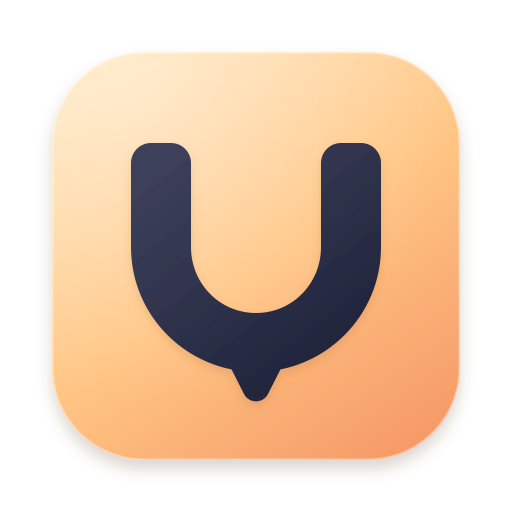

ANYUSAGEPIN / ICON EXPLORATIONS
第一輪四個造型方向。正式採用 Orbit 原版（B1），其餘保留作設計比較。
額度圖釘。把 Pin 與用量合成一個符號，最直接對應產品名稱與用途。
環形儀表。多個額度環繞一個固定中心，偏精緻、輕盈的 macOS 工具感。
Orbit 定案與比較 ↗
訂閱卡片。強調多帳戶集中管理，帶一點層次與桌面工具的實體感。

品牌字標。Usage 的 U 結合釘尖，最簡潔醒目，偏獨立品牌識別。